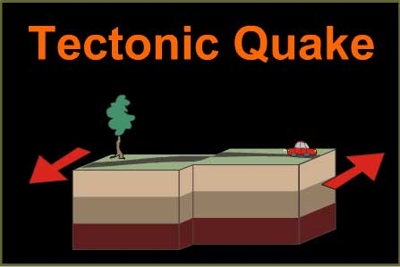
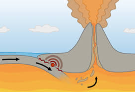
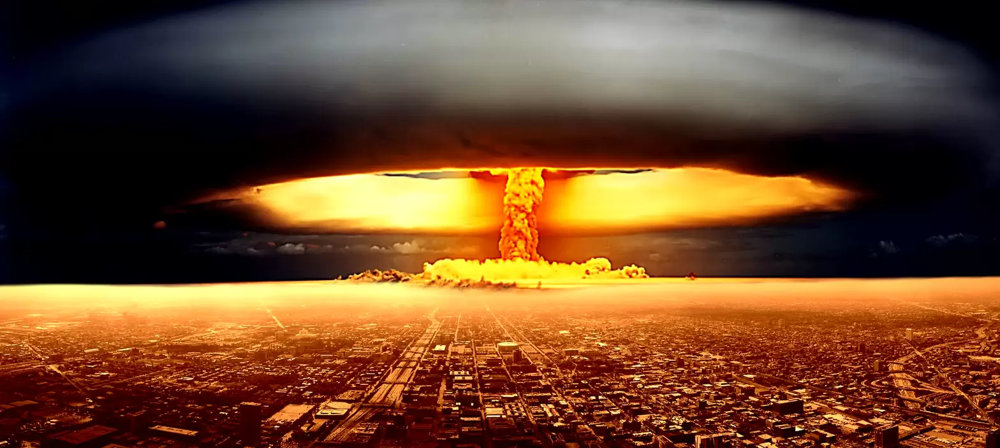
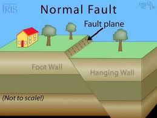
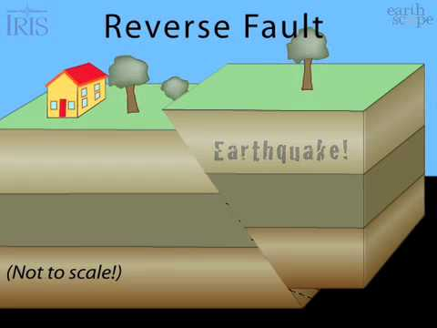
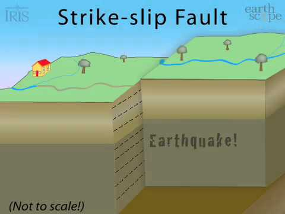

TYPES OF EARTHQUAKE'S & FAULTS




A tectonic earthquake is one that occurs when the earth's crust breaks due to geological forces on rocks and adjoining plates that cause physical and chemical changes.
A volcanic earthquake is any earthquake that results from tectonic forces which occur in conjunction with volcanic activity.
A collapse earthquake are small earthquakes in underground caverns and mines that are caused by seismic waves produced from the explosion of rock on the surface.
An explosion earthquake is an earthquake that is the result of the detonation of a nuclear and/or chemical device.
TYPES OF FAULT'S



Normal faults form when the hanging wall drops down. The forces that create normal faults are pulling the sides apart, or extensional.
Reverse faults form when the hanging wall moves up. The forces creating reverse faults are compressional, pushing the sides together.
Transcurrent or Strike-slip faults have walls that move sideways, not up or down.